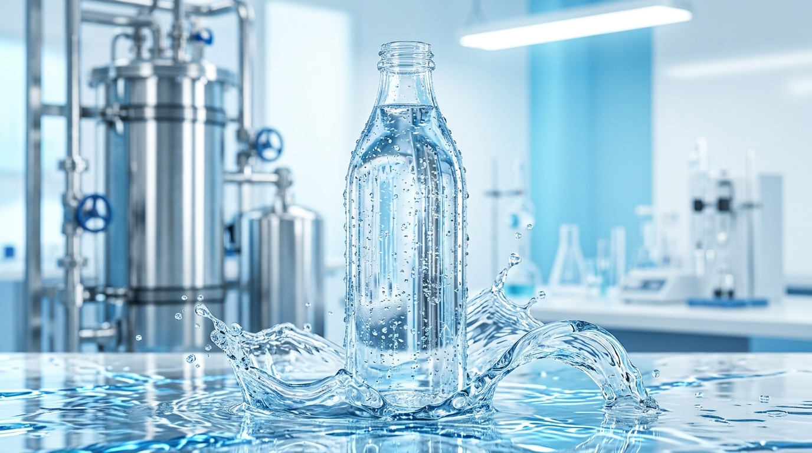
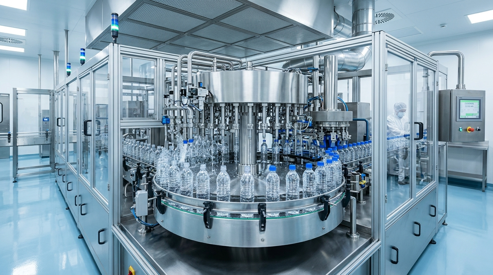
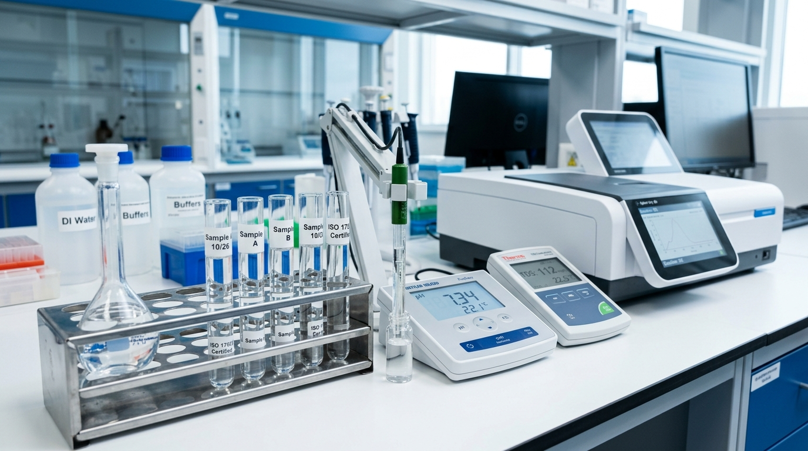
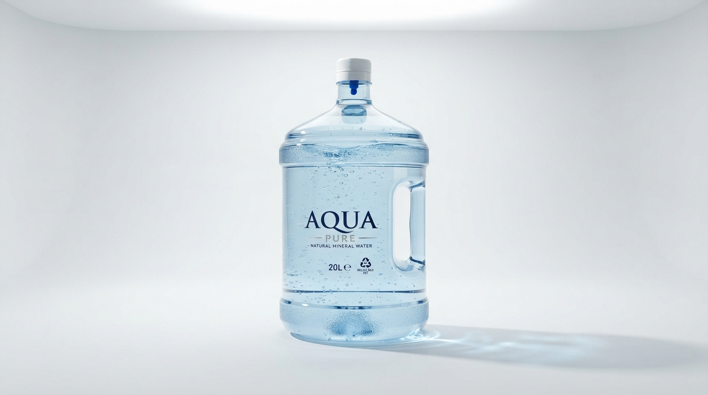

Pure Science.
Advanced Bottling & Hydration Trends.
Authoritative perspectives on industrial RO membrane separation, mineral ionic equilibrium, statutory BIS IS 14543 laboratory testing, and circular eco-packaging.
BIS IS 14543Certified Science
10+ ArticlesPeer-Reviewed

100% Sterile BottlingPure Science & Engineering
Spotlight Analysis
Plant Technology Nov 08, 2026 7 min read
The 11-Stage Automated Water Purification Protocol: From Protected Aquifer to Sterile Bottling
Explore how dual-stage sand beds, coconut-shell activated carbon, twin TFC reverse osmosis membranes, and residual ozone contact towers eliminate 99.99% of impurities while safeguarding natural minerals.
Dr. Rajesh VarmaChief Chemical Engineer & Plant Director
Total Dissolved Solids (TDS) is often misunderstood. Learn the critical difference between aggressive demineralization and biologically balanced drinking water that hydrates at the cellular level.
Plant Technology

Oct 29, 2026 6 min read
Robotic Monobloc Bottling in ISO Class 7 Cleanrooms: The Touchless Revolution
How HEPA-filtered cleanrooms, rotary inversion rinsers, and laser torque capping eliminate micro-particulate contamination in less than 4 seconds per container.
Quality & Standards

Oct 22, 2026 5 min read
BIS IS:14543 vs. Municipal Water: Deciphering the 36 Mandatory Compliance Assays
A comprehensive walkthrough of statutory laboratory assays—from pesticide residues and heavy metal spectroscopy to microbiological incubation across shifts.
Eco Packaging
Oct 15, 2026 4 min read
The Circular Lifecycle of 20L Water Cans: 7-Stage Sanitization & Eco-Stewardship
Reusable polycarbonate and food-grade PET cans prevent millions of single-use containers from reaching landfills. Discover our automated pressure-sanitization protocol.
Health & Hydration
Oct 09, 2026 5 min read
Cellular Hydration & Athletic Recovery: The Vital Role of Ionic Calcium and Magnesium
Why pure water with calibrated electrolyte levels prevents muscle fatigue, supports neurological signaling, and ensures faster intracellular replenishment during exertion.
Water Science
Sep 30, 2026 6 min read
Microplastics Elimination in Drinking Water: Sub-Micron Absolute Filtration Realities
How multi-tier cartridge filtration cascading down to 0.1-micron membranes screens out microplastics, sediment, and colloidal matter before ozone retention.
Plant Technology
Sep 24, 2026 4 min read
Wholesale Corporate Can & Bottled Water Logistics: Guaranteeing On-Time Purity
From IoT temperature-monitored transit fleets to automated barcode lot tracking, learn how our distribution infrastructure keeps offices and institutions consistently hydrated.
Plant Technology

Sep 18, 2026 5 min read
Smart Countertop Dispensers & Gravity Faucets: The Next Generation of Workplace Hydration
How built-in food-grade bottom taps, ergonomic upright designs, and hermetic dust seals eliminate heavy lifting and surface cross-contamination in corporate pantries.
Eco Packaging
Sep 10, 2026 6 min read
From Virgin Preforms to 100% Circularity: The Sustainable Engineering of Modern Bottled Products
Explore how light-weighted food-grade preforms, zero-chemical cleaning protocols, and closed-loop rPET recycling slash lifecycle emissions across our bottle collections.
No Matching Articles Found
Try searching with another keyword or reset the category filter to explore all articles.
Subscribe to AquaPure Industry Briefings
Receive bi-weekly technical summaries on drinking water regulations, laboratory microbiological reports, and municipal water purification engineering direct to your inbox.
Plant Technology
Article Title
Dr. Rajesh VarmaChief Chemical Engineer
Nov 08, 20267 min read
Share this insight:
Request a Quick Plant Quote
Direct from AquaPure ISO & BIS automated bottling facility